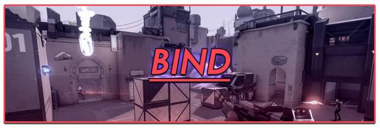
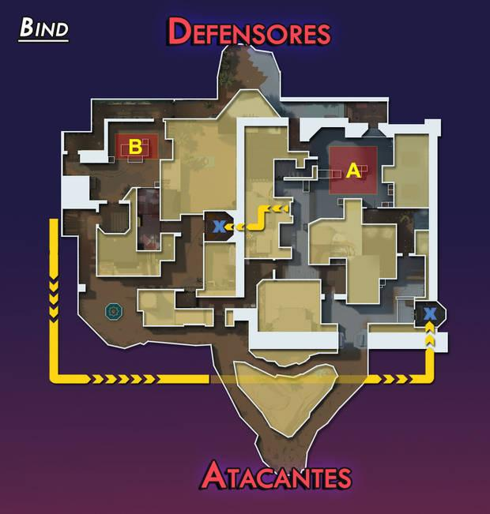
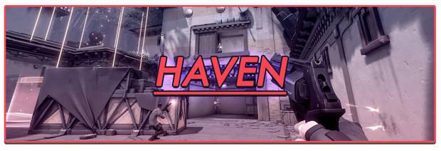
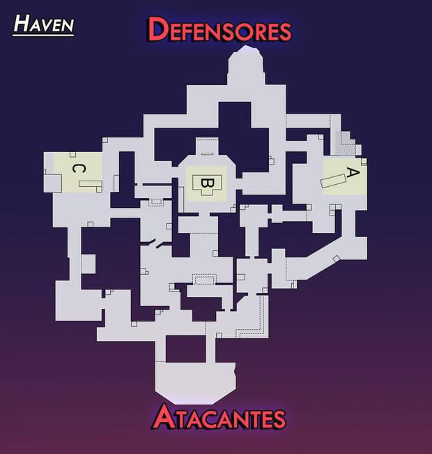
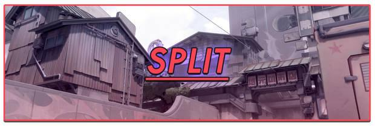
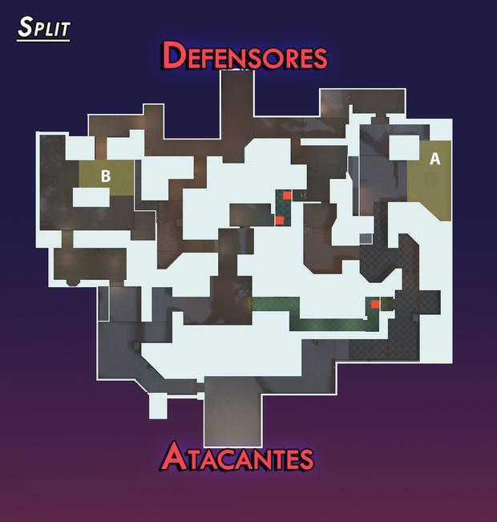
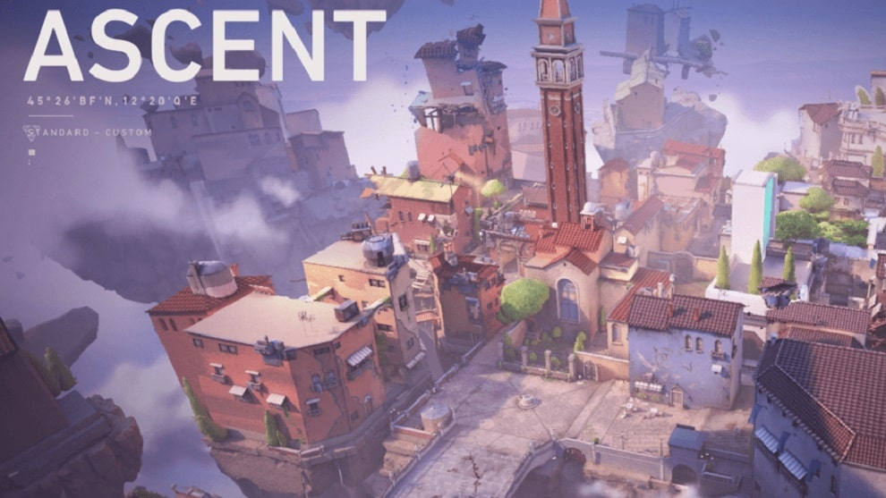
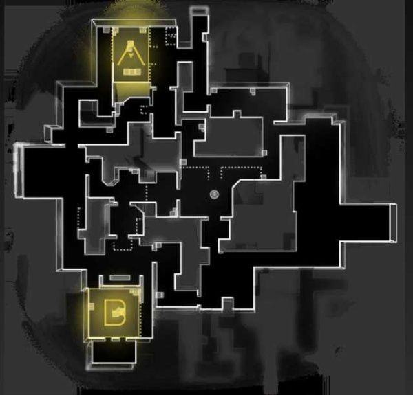

Mapas
Bind
Emplazamientos para la SPIKE: 2 (A y B). Portales de teletransporte: 2. Bind es un mapa ambientado en una ciudad de arquitectura árabe con varios pasillos y callejuelas, además de contar con las instalaciones de unos laboratorios y unos pocos puntos altos que dan ventaja de altura. Pero lo más interesante de este mapa es que es el único que posee dos portales de teletransporte unidireccional con los que movernos rápidamente entre ubicaciones. Debido a sus características, creemos que es un mapa muy favorecedor para el equipo de los defensores, y difícil para los atacantes, que solo tienen dos zonas para plantar la SPIKE. Precisamente los portales pueden hacer que los defensores pillen desprevenidos a los atacantes por la espalda, así que se recomienda estar muy atento al sonido que estos producen. Consejos generales para Bind Si eres atacante, cuidado con apresurarse hacia la zona Corto-B y Ventana-B, suele ser un hervidero de balas. Los pasillos de Lamparas-A pueden ser un buen lugar para esconderse. Los suelos del laboratorio hacen bastante ruido al correr por ellos, intenta andar lento. Usar los teletransportes es una buena idea de distracción al colocar la bomba. La Torre-A es un gran lugar para posicionarse como francotirador. Cypher, Sage y Omen son agentes que dan muy buenos resultados en este mapa.

Haven
Emplazamientos para la SPIKE: 3 (A, B y C). Portales de teletransporte: Ninguno. Haven es el mapa más grande y complejo de Valorant. Está ambientado en un pueblo de estilo japonés medio destruido, con unas cuantas calles estrechas y plazas abiertas. Y es el único mapa que cuenta con 3 emplazamientos para plantar la SPIKE, lo que hace que sea difícil de defender y versátil de atacar. Por todo esto, la comunicación y el trabajo en equipo es esencial en Haven. A favor tenemos que las zonas clave están bastante cerca las unas de las otras, por lo que el desplazamiento se vuelve genuino y la acción frenética (sobre todo por algunos puntos ciegos importantes). Consejos generales para Haven Si eres atacante intenta que tu equipo se distribuya entre todas las barreras antes de que acabe la fase de compra. Se recomienda esperar a que sean los defensores los que ataquen primero. Corto-A es un excelente sitio para realizar emboscadas. Desde Puerta-B se puede defender bastante bien la entrada con habilidades de agentes. Largo-A y Largo-C son buenos lugares para defender con un francotirador. Sage, Phoenix y Breach son agentes que dan muy buenos resultados en este mapa

Split
Emplazamientos para la SPIKE: 2 (A y B). Portales de teletransporte: Ninguno. Split puede resultar un mapa algo laberíntico de entrada, pero termina siendo fácil de entender, sobre todo si vienes de juegos como League of Legends ya que tiene 3 carriles principales, uno en el centro y dos a cada lado que llevan a los emplazamientos de la SPIKE. Este mapa está ambientado en los bajos fondos de una ciudad oriental con edificios modernos y de corte tradicional y cuenta con algunos pasajes subterráneos y muchas esquinas donde esconderse. Los defensores tienen una ligera ventaja frente a los atacantes ya que a estos les costará más transitar por los lugares y moverse de un lado a otro puede ser algo lento. Consejos generales para Split Para los atacantes, debido a la distancia de los lugares para la SPIKE, se recomienda centrar los esfuerzos de todo el pelotón solo en uno de los dos puntos A o B. Main-A y Main-B son puntos de entrada cruciales para los atacantes, aunque es muy probable que los defensores protejan estas zonas con sus habilidades. Para los defensores, Pantallas-A y Callejón-B son dos rutas muy importantes que llevan directamente a las zonas A y B, sin perder tiempo. Vigas-B y Back-B ofrecen buenas posiciones para colocarse en defensa. Sova, Brimstone y Viper son agentes que dan muy buenos resultados en este mapa.
Emplazamientos para la SPIKE: 2 (A y B). Portales de teletransporte: Ninguno. Split puede resultar un mapa algo laberíntico de entrada, pero termina siendo fácil de entender, sobre todo si vienes de juegos como League of Legends ya que tiene 3 carriles principales, uno en el centro y dos a cada lado que llevan a los emplazamientos de la SPIKE. Este mapa está ambientado en los bajos fondos de una ciudad oriental con edificios modernos y de corte tradicional y cuenta con algunos pasajes subterráneos y muchas esquinas donde esconderse. Los defensores tienen una ligera ventaja frente a los atacantes ya que a estos les costará más transitar por los lugares y moverse de un lado a otro puede ser algo lento. Consejos generales para Split Para los atacantes, debido a la distancia de los lugares para la SPIKE, se recomienda centrar los esfuerzos de todo el pelotón solo en uno de los dos puntos A o B. Main-A y Main-B son puntos de entrada cruciales para los atacantes, aunque es muy probable que los defensores protejan estas zonas con sus habilidades. Para los defensores, Pantallas-A y Callejón-B son dos rutas muy importantes que llevan directamente a las zonas A y B, sin perder tiempo. Vigas-B y Back-B ofrecen buenas posiciones para colocarse en defensa. Sova, Brimstone y Viper son agentes que dan muy buenos resultados en este mapa.

Ascent
Emplazamientos para la SPIKE: 2 (A y B). Inspirado en Italia, el mapa Ascent puede ser un dolor de muelas con infinidad de pasillos y zonas abiertas difíciles de dominar. Su particularidad son dos puertas que se activan pulsando sus respectivos botones para controlar mejor las zonas A y B, pero cuidado, porque ambas son destruibles con un puñado de tiros. Los orbes puden ser controlados con humo o muros, pero es preferible tomarlos de lado en vez de cara y conviene estar atentos a las posiciones con altura que personajes como Jett pueden utilizar para disparar sobre nuestras defensas. Emplazamientos para la SPIKE: 2 (A y B). Portales de teletransporte: Ninguno. Split puede resultar un mapa algo laberíntico de entrada, pero termina siendo fácil de entender, sobre todo si vienes de juegos como League of Legends ya que tiene 3 carriles principales, uno en el centro y dos a cada lado que llevan a los emplazamientos de la SPIKE. Este mapa está ambientado en los bajos fondos de una ciudad oriental con edificios modernos y de corte tradicional y cuenta con algunos pasajes subterráneos y muchas esquinas donde esconderse. Los defensores tienen una ligera ventaja frente a los atacantes ya que a estos les costará más transitar por los lugares y moverse de un lado a otro puede ser algo lento. Defensa y ataque en Ascent Ascent es un mapa relativamente fácil de defender siempre que el equipo contrario elija B en vez de A. Esta última posición es una zona mucho más abierta que, además, ofrece tres entradas fáciles de tomar en vez de las dos principales de B. En defensa, mejor repartir el trabajo con avistadores como Sova o Cypher en la entrada a A y B e intentar controlar el centro del mapa y el pasillo de la ventana con el resto del equipo. De esta forma el apoyo podrá llegar más rápido y estaréis obligando al equipo atacante a tomar uno de los dos caminos principales. En ataque, justo lo opuesto. Encarar A y dominarla desde el centro mientras otro jugador empuja por el pasillo principal será clave para tener tres caminos alternativos para ir eliminando defensores esquina a esquina y sin apresurarse.